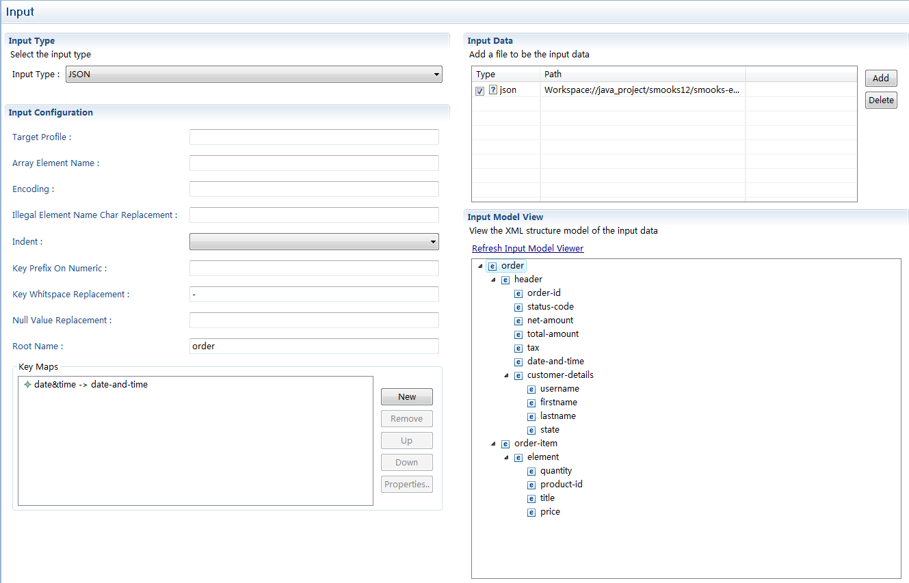

| Multiple
Page Editor |
'Reader' tab was replaced by 'Input' tab

The 'Input' page inherited many functions from the 'Reader'
page and there are several differences between them :
- Reader page can add multiple Reader.
Input page just allow only one Reader be added.
- Reader page support add multiple input data , and each of
them is usable.
Input page can add multiple input data too , but just only one of
them can be used.
- Reader page can view the results what is transformed by the
Reader
Input page has a input model view to check the transform result.
|